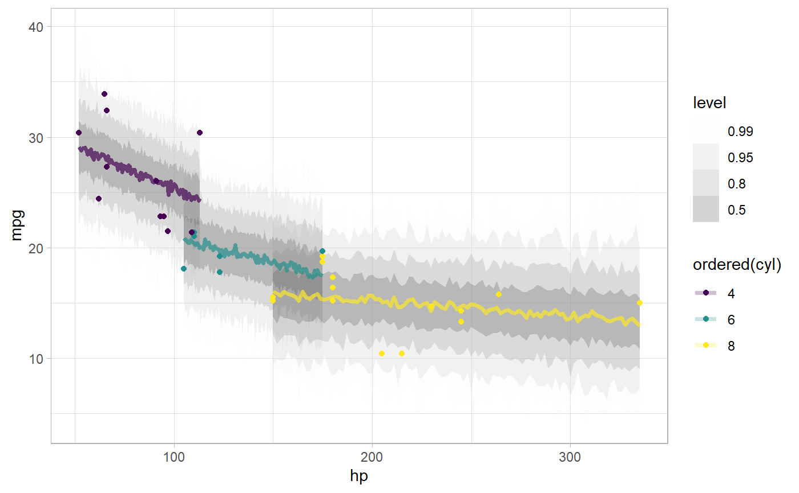

R/fitted_draws.R, R/predicted_draws.R, R/residual_draws.R
add_predicted_draws.RdGiven a data frame and a model, adds draws from the (possibly transformed) posterior "fit" (aka the linear/link-level predictor), the posterior predictions of the model, or the residuals of a model to the data frame in a long format.
add_fitted_draws(newdata, model, value = ".value", ..., n = NULL, seed = NULL, re_formula = NULL, category = ".category", dpar = FALSE, scale = c("response", "linear")) fitted_draws(model, newdata, value = ".value", ..., n = NULL, seed = NULL, re_formula = NULL, category = ".category", dpar = FALSE, scale = c("response", "linear")) add_linpred_draws(newdata, model, value = ".value", ..., n = NULL, seed = NULL, re_formula = NULL, category = ".category", dpar = FALSE, scale = c("response", "linear")) linpred_draws(model, newdata, value = ".value", ..., n = NULL, seed = NULL, re_formula = NULL, category = ".category", dpar = FALSE, scale = c("response", "linear")) # S3 method for default fitted_draws(model, newdata, ...) # S3 method for stanreg fitted_draws(model, newdata, value = ".value", ..., n = NULL, seed = NULL, re_formula = NULL, category = ".category", dpar = FALSE, scale = c("response", "linear")) # S3 method for brmsfit fitted_draws(model, newdata, value = ".value", ..., n = NULL, seed = NULL, re_formula = NULL, category = ".category", dpar = FALSE, scale = c("response", "linear")) add_predicted_draws(newdata, model, prediction = ".prediction", ..., n = NULL, seed = NULL, re_formula = NULL, category = ".category") predicted_draws(model, newdata, prediction = ".prediction", ..., n = NULL, seed = NULL, re_formula = NULL, category = ".category") # S3 method for default predicted_draws(model, newdata, ...) # S3 method for stanreg predicted_draws(model, newdata, prediction = ".prediction", ..., n = NULL, seed = NULL, re_formula = NULL, category = ".category") # S3 method for brmsfit predicted_draws(model, newdata, prediction = ".prediction", ..., n = NULL, seed = NULL, re_formula = NULL, category = ".category") add_residual_draws(newdata, model, residual = ".residual", ..., n = NULL, seed = NULL, re_formula = NULL, category = ".category") residual_draws(model, newdata, residual = ".residual", ..., n = NULL, seed = NULL, re_formula = NULL, category = ".category") # S3 method for default residual_draws(model, newdata, ...) # S3 method for brmsfit residual_draws(model, newdata, residual = ".residual", ..., n = NULL, seed = NULL, re_formula = NULL, category = ".category")
| newdata | Data frame to generate predictions from. If omitted, most model types will generate predictions from the data used to fit the model. |
|---|---|
| model | A supported Bayesian model fit that can provide fits and predictions. Supported models
are listed in the second section of tidybayes-models: Models Supporting Prediction. While other
functions in this package (like |
| value | The name of the output column for |
| ... | Additional arguments passed to the underlying prediction method for the type of model given. |
| n | The number of draws per prediction / fit to return, or |
| seed | A seed to use when subsampling draws (i.e. when |
| re_formula | formula containing group-level effects to be considered in the prediction.
If |
| category | For some ordinal, multinomial, and multivariate models (notably, |
| dpar | For |
| scale | Either |
| prediction | The name of the output column for |
| residual | The name of the output column for |
A data frame (actually, a tibble) with a .row column (a
factor grouping rows from the input newdata), .chain column (the chain
each draw came from, or NA if the model does not provide chain information),
.iteration column (the iteration the draw came from, or NA if the model does
not provide iteration information), and a .draw column (a unique index corresponding to each draw
from the distribution). In addition, fitted_draws includes a column with its name specified by
the value argument (default is .value) containing draws from the (transformed) linear predictor,
and predicted_draws contains a .prediction column containing draws from the posterior predictive
distribution. For convenience, the resulting data frame comes grouped by the original input rows.
add_fitted_draws adds draws from (possibly transformed) posterior linear predictors (or "link-level" predictors) to
the data. It corresponds to posterior_linpred in rstanarm or
fitted.brmsfit in brms.
add_predicted_draws adds draws from posterior predictions to
the data. It corresponds to posterior_predict in rstanarm or
predict.brmsfit in brms.
add_fitted_draws and fitted_draws are alternate spellings of the
same function with opposite order of the first two arguments to facilitate use in data
processing pipelines that start either with a data frame or a model. Similarly,
add_predicted_draws and predicted_draws are alternate spellings.
Given equal choice between the two, add_fitted_draws and add_predicted_draws
are the preferred spellings.
add_linpred_draws and linpred_draws are alternative spellings of fitted_draws
and add_fitted_draws for consistency with rstanarm terminology (specifically
posterior_linpred).
add_draws for the variant of these functions for use with packages that do not have
explicit support for these functions yet. See spread_draws for manipulating posteriors directly.
library(ggplot2) library(dplyr) if ( require("rstanarm", quietly = TRUE) && require("modelr", quietly = TRUE) ) { theme_set(theme_light()) m_mpg = stan_glm(mpg ~ hp * cyl, data = mtcars, # 1 chain / few iterations just so example runs quickly # do not use in practice chains = 1, iter = 500) # draw 100 fit lines from the posterior and overplot them mtcars %>% group_by(cyl) %>% data_grid(hp = seq_range(hp, n = 101)) %>% add_fitted_draws(m_mpg, n = 100) %>% ggplot(aes(x = hp, y = mpg, color = ordered(cyl))) + geom_line(aes(y = .value, group = paste(cyl, .draw)), alpha = 0.25) + geom_point(data = mtcars) # plot posterior predictive intervals mtcars %>% group_by(cyl) %>% data_grid(hp = seq_range(hp, n = 101)) %>% add_predicted_draws(m_mpg) %>% ggplot(aes(x = hp, y = mpg, color = ordered(cyl))) + stat_lineribbon(aes(y = .prediction), .width = c(.99, .95, .8, .5), alpha = 0.25) + geom_point(data = mtcars) + scale_fill_brewer(palette = "Greys") }#> #> SAMPLING FOR MODEL 'continuous' NOW (CHAIN 1). #> Chain 1: #> Chain 1: Gradient evaluation took 0 seconds #> Chain 1: 1000 transitions using 10 leapfrog steps per transition would take 0 seconds. #> Chain 1: Adjust your expectations accordingly! #> Chain 1: #> Chain 1: #> Chain 1: Iteration: 1 / 500 [ 0%] (Warmup) #> Chain 1: Iteration: 50 / 500 [ 10%] (Warmup) #> Chain 1: Iteration: 100 / 500 [ 20%] (Warmup) #> Chain 1: Iteration: 150 / 500 [ 30%] (Warmup) #> Chain 1: Iteration: 200 / 500 [ 40%] (Warmup) #> Chain 1: Iteration: 250 / 500 [ 50%] (Warmup) #> Chain 1: Iteration: 251 / 500 [ 50%] (Sampling) #> Chain 1: Iteration: 300 / 500 [ 60%] (Sampling) #> Chain 1: Iteration: 350 / 500 [ 70%] (Sampling) #> Chain 1: Iteration: 400 / 500 [ 80%] (Sampling) #> Chain 1: Iteration: 450 / 500 [ 90%] (Sampling) #> Chain 1: Iteration: 500 / 500 [100%] (Sampling) #> Chain 1: #> Chain 1: Elapsed Time: 0.092 seconds (Warm-up) #> Chain 1: 0.069 seconds (Sampling) #> Chain 1: 0.161 seconds (Total) #> Chain 1:#> Warning: Bulk Effective Samples Size (ESS) is too low, indicating posterior means and medians may be unreliable. #> Running the chains for more iterations may help. See #> http://mc-stan.org/misc/warnings.html#bulk-ess#> Warning: Tail Effective Samples Size (ESS) is too low, indicating posterior variances and tail quantiles may be unreliable. #> Running the chains for more iterations may help. See #> http://mc-stan.org/misc/warnings.html#tail-ess